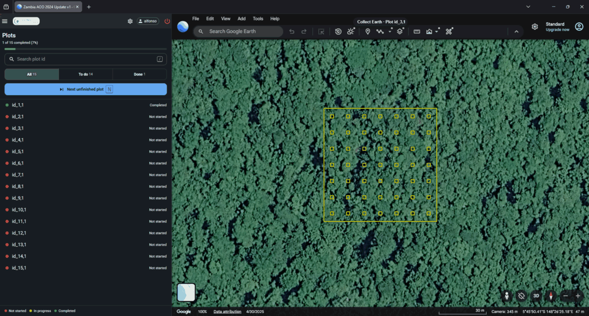
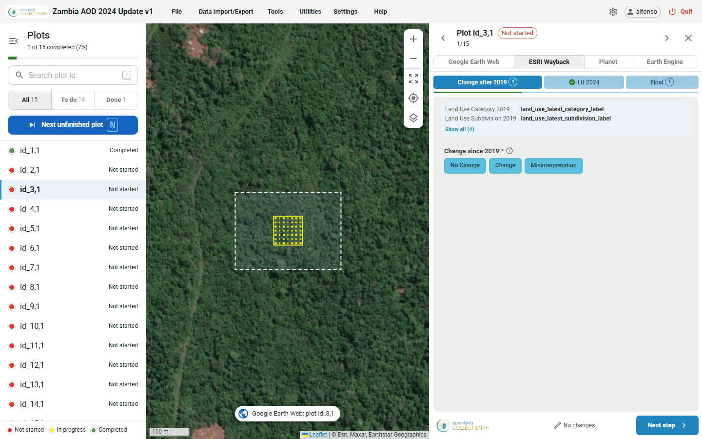
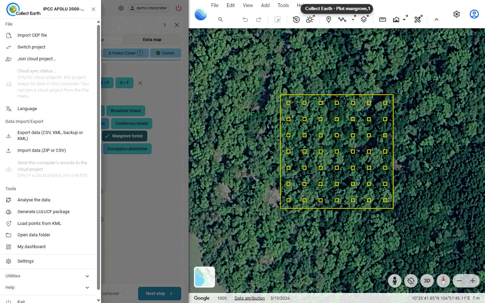
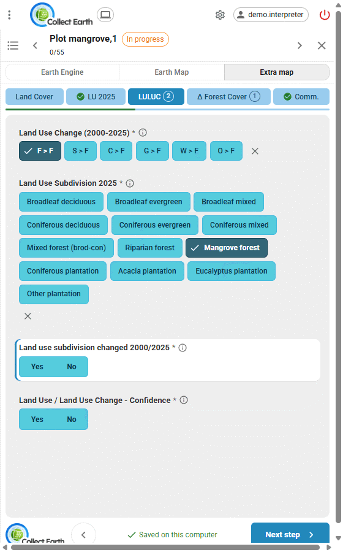
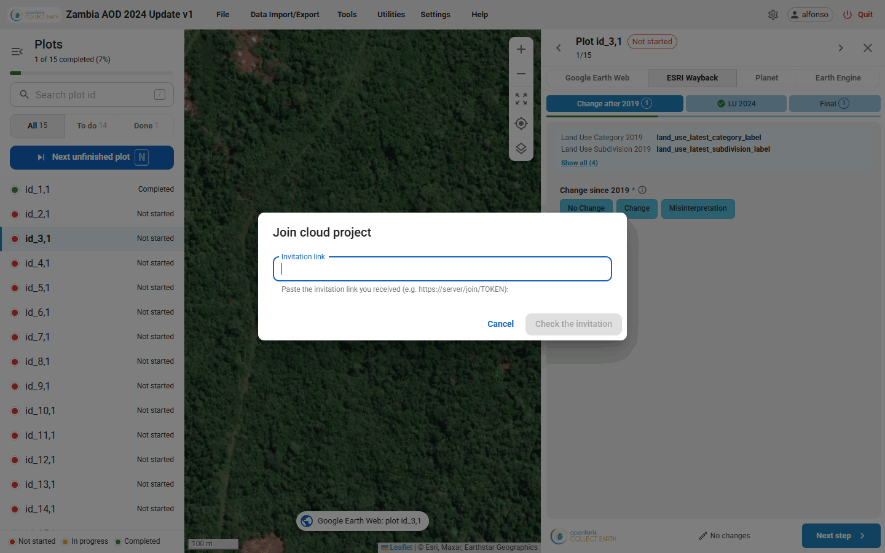
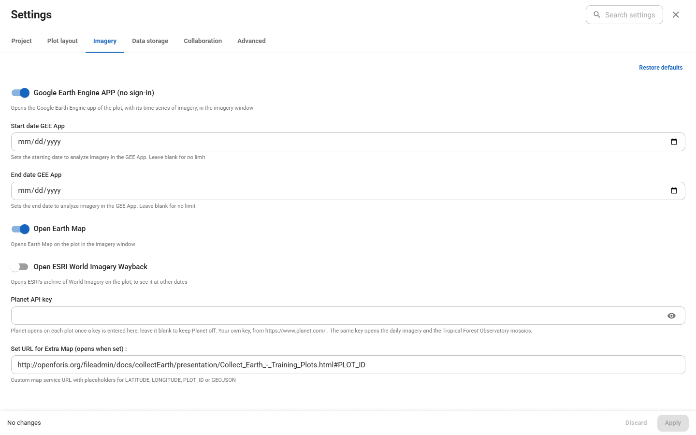
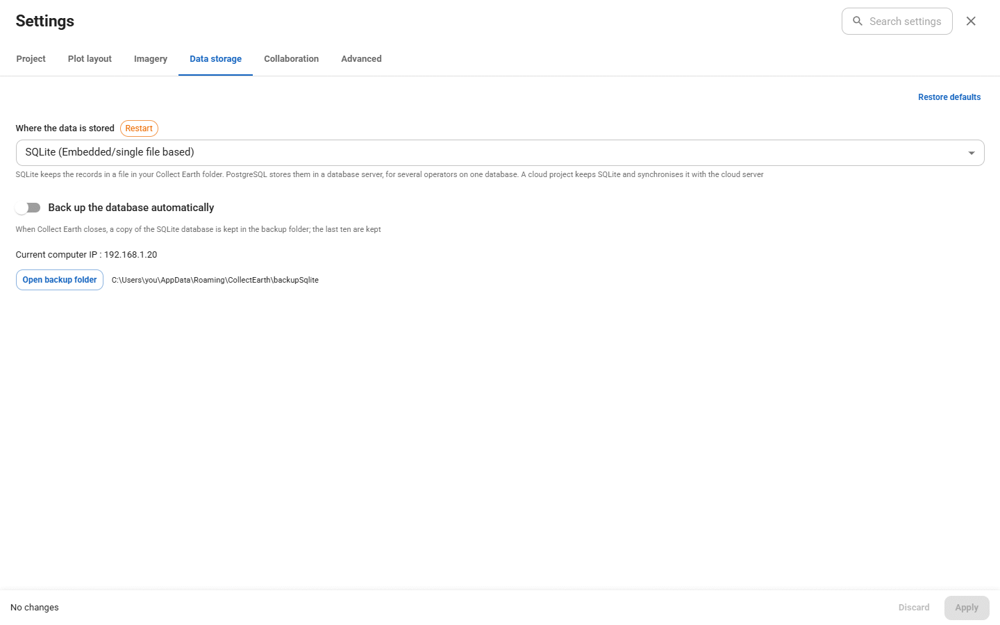
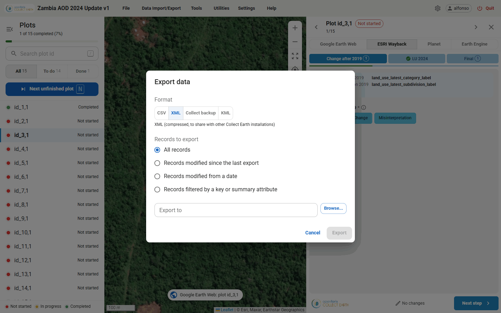
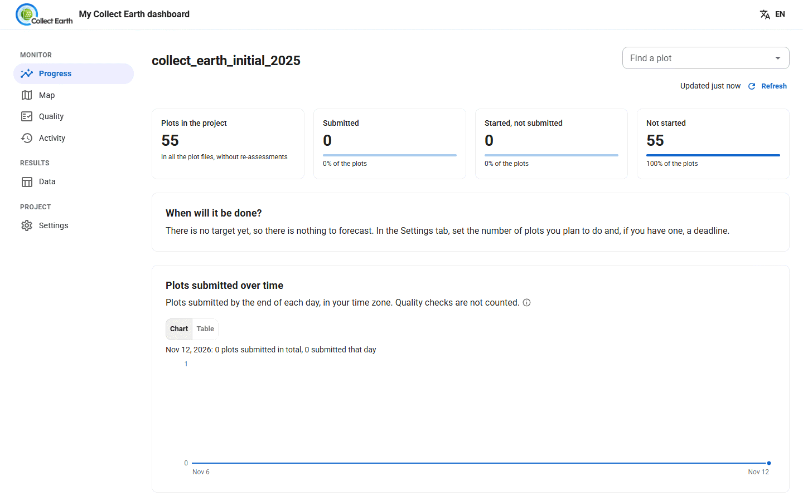

Collect Earth for interpreters
Collect Earth shows each plot on a map beside high-resolution imagery, and a form with the survey's questions. You look, you answer, you submit, and the next plot opens. This guide covers the desktop program, whether you work alone or in a cloud project.
Install and start
- Download Collect Earth for Windows, macOS or Linux and run the installer. It brings its own Java. You also need Chrome, Edge or Firefox, and an internet connection while you work: the imagery comes from Google Earth and the other imagery services.
- Start Collect Earth. A small window shows each step while it opens; the first start can take up to a minute.
- Collect Earth opens in your browser, inside Google Earth Web (see The Collect Earth window). The first time, it loads a demo project so you can try it out, and Google may ask you to accept its cookies or to sign in in that window; Collect Earth remembers it afterwards.
- Type your name when asked (6 to 49 characters). It is saved with every plot you assess, so your plots can be told apart from others'. Click your name in the top bar to change it later.
Collect Earth keeps running in the system tray. Double-click its icon to open the window again; right-click it to quit.
Open a project
A project file (.cep) holds the survey, its form, the plots and the settings. Your coordinator gives it to you, or you make one with Open Foris Collect's Survey Designer. To open it, do one of these:
- File › Import CEP file, choose the file and press Import the project.
- Drag the
.ceponto the Collect Earth window. - Double-click the
.cepfile.
Collect Earth restarts with the project. Projects you opened before are listed in Settings › Project › Previously loaded projects, to switch back at any time.
In a cloud project you don't need the file: you join with an invitation link instead (see Join a cloud project).
The Collect Earth window
By default Collect Earth works inside Google Earth Web: a panel in the Google Earth Web page holds the plot list or the form of the selected plot, one at a time, and Google Earth Web flies to each plot you choose and draws its outline. The other imagery opens in a window of its own, on a second screen if you have one.

- Top bar: the project name, the menus (File, Data Import/Export, Tools, Utilities, Settings, Help), the settings gear, your name, and Quit. In the panel it is a compact bar.
- Plot list: how many plots are done (12 of 120 completed), Search plot id, the Show plots filter (All, To do, Done) and Next unfinished plot.
Prefer Collect Earth's own map? Choose Plots map window as the Plot viewer in Settings › Imagery and viewer. Collect Earth then opens in a browser window of its own, with the plot list, the form and a map of every plot, coloured by its status: zoom, Show all plots, Center on the selected plot, and Map layers (satellite, with labels, or streets).

| Colour on the plots map | Status |
|---|---|
| Red | Not started |
| Yellow | In progress: saved, not submitted |
| Green | Completed: submitted |

Keyboard shortcuts: / search a plot, N next unfinished plot, P same answers as the previous plot, Alt+1…9 imagery tabs. In the form: Ctrl+Enter (Cmd+Enter on a Mac) submits, Alt+←/→ changes step, ↑/↓ moves between questions, 1…9 picks an answer of a choice question, and Esc leaves the box you are typing in; a second Esc closes the form.
Assess a plot
- Click a plot in the list, or on the plots map. Its form opens, and the imagery moves to it.
- Look at the imagery and answer the questions. Long surveys are split into steps; the form moves to the next step by itself.
- Every answer is saved at once. The form shows All changes saved.
- Press Submit when the plot is complete. If answers are missing, the form lists them with links. Once submitted, the plot turns green and the next unfinished plot opens.

Many plots look alike? Same as previous plot (P) fills the empty choice and Yes/No answers of this step with those of the plot you submitted last. They are marked Copied until you look at them: check them, change what differs, and submit.
In a cloud project, a training plot shows how you did once you submit it: Training plot: 3 of 4 answers right, with the golden answer and the reason for each one you missed.
Changing a submitted plot un-submits it: it turns yellow until you press Resubmit.
Imagery
The buttons above the form open the plot in each source of imagery switched on in Settings › Imagery and viewer: Google Earth Web, an Earth Engine app with time series (on by default), ESRI Wayback (older imagery) and Earth Map (tick them to turn them on), Planet (with a key), and an extra map your project can set (with its address). With only one source there are no buttons.
By default the Plot viewer is Plots map + Google Earth Web, with the Window layout set to Automatic: the plots map inside Google Earth Web, and the other imagery on a second screen. Other layouts: Side by side (narrow form, imagery on the rest), Separate screens (one window per screen), Imagery full screen on the second screen, or Plots map inside Google Earth Web. Arrange windows puts them back in place, and opens again a window you closed.
Planet needs your own Planet API key (in Settings › Imagery and viewer). With it, Planet opens its daily imagery of each plot; tick Use Tropical Forest Observatory (TFO) monthly basemaps for the monthly mosaics.
Join a cloud project
In a cloud project every plot you save is sent to the server by itself, and the coordinator follows the team's work on the web dashboard.
- Your coordinator sends you an invitation link. Copy it.
- In Collect Earth, choose File › Join cloud project..., paste the Invitation link and press Check the invitation.
- Check the project name and your role, and press Continue.
- Log in, or Register a new account (a password of at least 8 characters).
- Collect Earth downloads the project and restarts. The window title ends with [Cloud project].
- In Settings › Project, choose your Assigned plot file. Refresh assignments fetches files the coordinator gives you later.

Then work as usual. Your saved plots are sent in the background within about 30 seconds. If the connection drops for a moment, the plots wait on your computer and are sent when it comes back. File › Cloud sync status... shows what is waiting, what failed and what was sent, with Sync now.
In a cloud project your name is your account name. Your own progress, quality figures and training feedback are on the dashboard's My work page (Tools › My dashboard).
Settings
The gear in the top bar opens the settings. Change what you need, then press Apply. Settings marked Restart restart Collect Earth.

- Project: the plot file (with a check of how many plots it holds, its first rows, and where they are on a map), and the projects you loaded before.
- Plot layout: the plot's shape (square, circle, hexagon, polygons from the plot file, NFI clusters…), the sampling points inside it and their size, with a preview.
- Imagery and viewer: the plot viewer, the window layout, the map imagery and the extra sources (Earth Engine dates, Planet key, extra map).
- Data storage: where the plots are saved. SQLite (one file on this computer, the default), PostgreSQL (a database several computers share on an office network), or Cloud project.
- Collaboration: the cloud server, the project and its access token, filled in for you when you join a cloud project.
- Advanced: which browser Collect Earth uses.

Export, import and backups
Data Import/Export › Export data (CSV, XML, backup or KML) saves your plots as:
| Format | Use it for |
|---|---|
| CSV (Excel) | A spreadsheet or R. Tick Include labels for code attributes for readable answers. |
| XML (compressed) | Moving plots to another Collect Earth, or into a cloud project |
| Collect backup | Opening the data in Open Foris Collect |
| KML | Seeing plots and answers in Google Earth |
You can export all records, only those changed since the last export, those changed since a date, or a filtered set.

Import data (ZIP or CSV) brings in another Collect Earth's compressed XML export (it asks what to do with plots you already have), or changes to some answers from a CSV.
With SQLite, Collect Earth backs up its database each time it closes and keeps the last ten (Settings › Data storage › Open backup folder). Now and then, also export a compressed XML and keep it somewhere else.
Tools and utilities
- Tools › Analyse the data: tables and charts of your answers in the browser, also as a stand-alone file to share.
- Tools › My dashboard: progress, a map, the data, quality hints and activity for this computer's plots. In a cloud project it opens the project's dashboard.
- Tools › Generate LULUCF package: the data prepared for greenhouse gas reporting to the IPCC.
- Tools › Load points from KML: makes a plot file from points in a KML.
- Utilities › Find missing plots in database: compares a plot file with your database and lists plots not yet submitted.
- Utilities › Divide large CSV plot files: splits a plot file into several, at random or by the values of a column, to share out the work by hand.

Common problems
| What you see | What to do |
|---|---|
| A plot is yellow, not green | It was changed after it was submitted. Open it and press Resubmit. |
| Cloud sync status shows plots waiting or failed | Nothing: they are sent again by themselves once the connection is back. Sync now tries at once. |
| "You are not logged in to the cloud project" | Log in again; nothing saved on your computer is lost. |
| No assigned plot file | Your coordinator hasn't given you plots yet. Ask them, then press Refresh assignments. |
| Collect Earth seems to stop after changing the project or a setting | It is restarting: wait, the small window shows each step until it opens again. |
Something else? Help › Technical Support opens the Open Foris support forum, and Help › Open Application Log File shows what Collect Earth did.